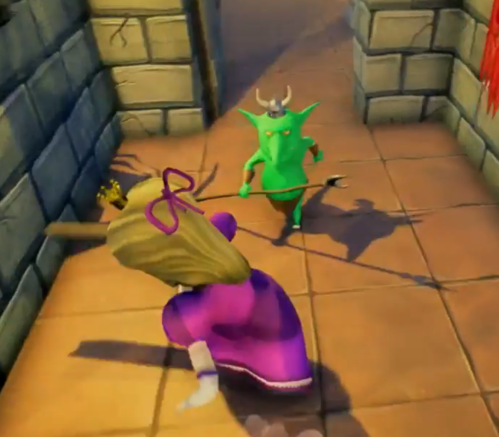

Juliette est une princesse qui attend son prince dans la plus haute chambre du chateau.
Malheureusement, les princes sont tous incapables de venir la libérer,
Impatiente, Juliette s'arme d'un pied de lit et décide de descendre la tour elle même.
C'est donc un jeu d'action en 3D à la 3ème personne dont le but est de sortir de la tour.
Le joueur trouvera sur son chemin des pouvoirs et des armes magiques
qui l'aideront à traverser les épreuves et vaincre les monstres de la tour.
Participer à la réalisation de ce jeu m'a appris beaucoup sur les jeux en 3D.
J'ai pu me familiariser avec (entre autres) la physique, le pathfinding, les animations, et l'IA faible.
Nous étions très satisfait du résultat final et heureux d'avoir pu travailler ensemble.
Disponible ici:
Juliette sors de sa chambre